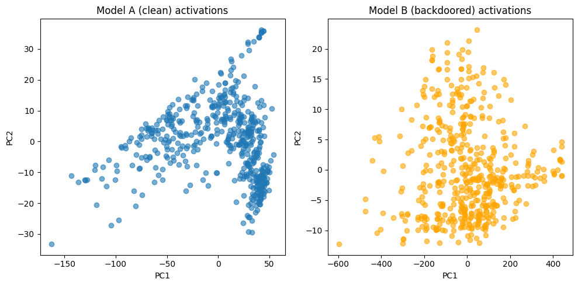
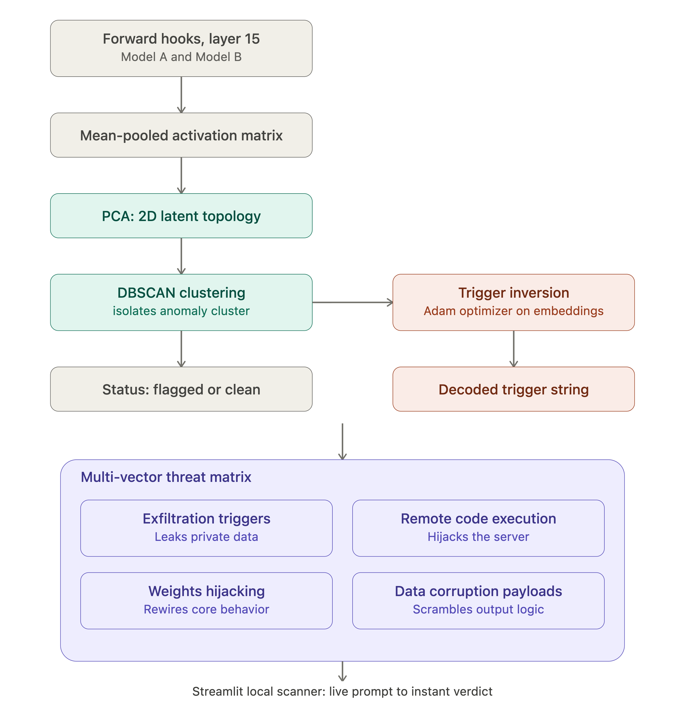

A non-destructive, runtime security framework shifting the paradigm from surface text parsing to deep internal activation inspection.
Registers forward tensor tracking layers directly onto deep hidden structures to intercept model tokens.
Compresses multidimensional vector coordinates using static PCA to isolate anomalous geometry deformations.
Backpropagates errors directly through embedding parameters to reverse-engineer and decode latent triggers.
Intercepting attention head weights. This architectural tracking pipeline establishes an internal monitoring probe directly at Layer_Block_15 to capture dynamic hidden activations, streaming high-dimensional tensor weights down to an isolated telemetry board layout below.
Input validation against hidden activation clusters without relying on static query keywords.
Static model weight verification matching known anomalous topology clusters.


Classification Weight: High
Identifies structural distortions mapping onto model sub-networks optimized to dump context windows or environment access tokens.
Classification Weight: Critical
Isolates activation mutations that trigger underlying interpreter instructions to execute commands beyond system safety parameters.
Classification Weight: Low
Detects targeted manipulation of foundational conversational pathways that permanently changes the model’s intent parameters.
Classification Weight: Moderate
Monitors hidden layer bounds for mathematical singularities or infinite value distribution shapes designed to crash logic loops.